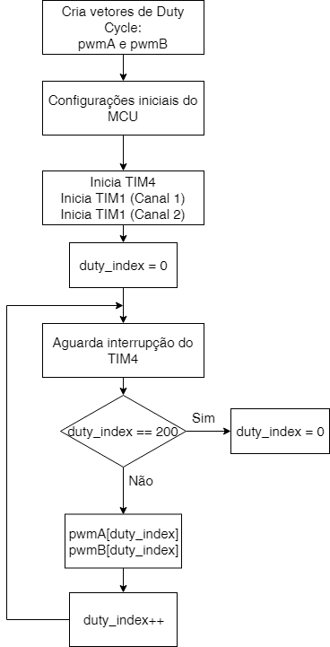

O projeto
-

Assistente virtual para leitura de textos impressos utilizando a plataforma Android: Smart Braille
Smart Braille é uma aplicação para smartphones que utiliza a API da Google Mobile Vision.
A aplicação consiste na importação da ferramenta Text Recognizer que em seguida iniciase a permissão para usar a câmera para a análise quadro a quadro da imagem capturada. Ao verificar um quadro, o Text Recognizer identifica ou não caraceteres, em caso de detecção de caracteres o código se encarrega de organizar as caracteres em palavras, as palavras em linhas e as linhas em blocos.
O fluxograma da aplicação pode ser conferido na imagem abaixo:
 -

Utilização do Raspberry PI como assistente virtual
O computador de baixo custo Raspberry Pi 3 tem se tornado mundialmente conhecido pela sua vasta usabilidade em projetos de pesquisas bem como para a diversão de quem o utiliza como emulador de jogos.
Neste projeto, o mesmo foi escolhido pela sua mobilidade e pelas suas especificações que permitem o uso de uma distribuição Linux intuitiva bem como o suporte a camera.
Diante disso, o grupo fez uso da ferramenta Tesseract a fim de reconhecer caracteres nas imagens e direcionar os textos para execução em um sintetizador de voz chamado gTTS (Google Text to Speech). Além da Raspberry Pi, o projeto conta com uma Webcam HD 4310 da Hewlett-Packard, capaz de capturar imagens em 1080 pixels.
-

Downloads
O download do artigo pode ser efetuado clicando aqui.